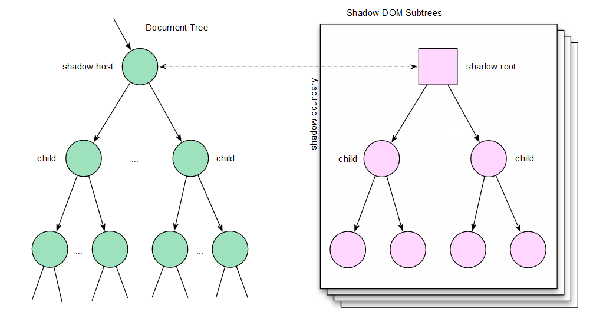

Hello

What is Accessibility?
Everyone can perceive, understand, navigate, and interact with the Web, and they can contribute to the Web.
A billion people with disabilities
15% of the population
Accessibility is about
PEOPLE.
Google Accessibility
Created by Marcy Sutton / @marcysutton
Web apps
Glass
Home
media Appliances Fitness Tracking Time travel Mobile OS Environmental
media Appliances Fitness Tracking Time travel Mobile OS Environmental
But...
- How do we get the message out?
Messaging A11Y
- The legal way
- The eat your vegetables way
- The fun way
Tacos
My objectives
- Research
- Listening
- Experimentation
- Leading by example
Research
Shadow DOM

<sparkle-party>
<h2>Do you like to dance?</h2>
<material-button id="lets-dance">
I wore my party pants
</material-button>
<disco-ball>
<canvas></canvas>
<live-region id="disco-transcript"></live-region>
</disco-ball>
</sparkle-party>
#a11y in single-page apps
- Manage ARIA attributes
- Enable the keyboard
- Handle focus
- Write meaningful HTML
- Alert the user
ARIA
Core Components
- Roles
- States
- Properties
Using Roles
- They're element types
- They're landmarks
- Start with native HTML tags
- Read the documentation
- Don't overdo it
Application Role
Disables a screen reader’s “virtual cursor”
<sparkle-party role="application"></sparkle-party>
Enabling the keyboard
<div ng-click="sorryKeyboards()"></div>
<button ng-click="woohoo()"></button>
<material-button role="button"
tabIndex="0"
ng-click="woohoo()">
</material-button>
Keyboard Accessibility
One Simple Trick
[tabIndex="0"] {
color: $linkColor;
&:focus, &:hover {
color: $linkActiveColor;
outline: default;
}
}
Make your framework do the heavy lifting 1 of 3
// AngularUI Bootstrap
<accordion-group
is-open="status.open"
is-disabled="status.isDisabled">
</accordion-group>
Make your framework do the heavy lifting 2 of 3
// AngularUI Bootstrap
<accordion-group
aria-expanded="true"
is-open="status.open"
aria-disabled="false"
is-disabled="status.isDisabled">
</accordion-group>
Make your framework do the heavy lifting 3 of 3
Example where ARIA attributes are the default
// AngularUI Bootstrap
<accordion-group
ng-expanded="status.open"
ng-disabled="status.isDisabled">
</accordion-group>
Angular.js Material Design

Angular Material Radio Buttons

<material-radio-group ng-model="data.group">
<material-radio-button value="1">
Label 1
</material-radio-button>
<material-radio-button value="2">
Label 2
</material-radio-button>
</material-radio-group>
Angular Material Radio Buttons (cont'd)
function materialRadioGroupDirective() {
element.attr({
'role': 'radiogroup',
'tabIndex': '0'
})
.on('keydown', keydownListener);
function keydownListener(ev) {
if (ev.which === Constant.KEY_CODE.LEFT_ARROW) {
rgCtrl.selectPrevious(element);
}
else if (ev.which === Constant.KEY_CODE.RIGHT_ARROW) {
rgCtrl.selectNext(element);
}
}
}
function materialRadioButtonDirective($expectAria) {
element.attr('role', 'radio');
$expectAria(element, 'aria-label', element.text());
var lastChecked;
attr.observe('value', render);
function render() {
var checked = (rgCtrl.getViewValue() === attr.value);
if(checked === lastChecked){ return; }
lastChecked = checked;
element.attr('aria-checked', checked);
}
}